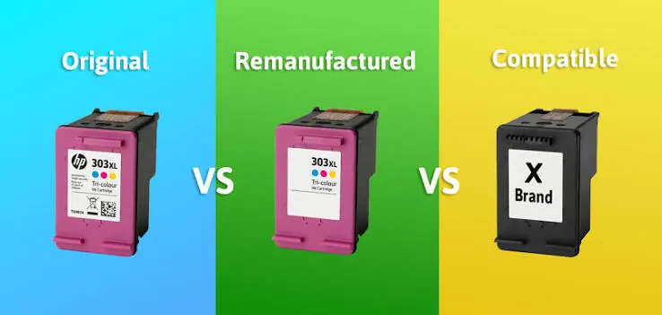

Printers
Original vs Compatible vs Refilled Cartridges: What Is Best for Your Printer?
Compare original, compatible and refilled printer cartridges by quality, price, reliability, warranty considerations and environmental impact.
Introduction
You may have found yourself in a situation where you need to replace your printer ink or toner. You may have various options to choose from for your printer model including OEM, compatible and refilled cartridges.
As you may be looking for the lowest priced option it is worth remembering that just because a cartridge is cheaper doesn’t mean it will give you the best value. It needs to be compatible with your printer, give you a good result and be reliable. This guide will outline the main differences between cartridges. Please ensure you check the manufacturer’s guidelines and compatibility information provided by your supplier.

1. What are original cartridges?
An original or genuine cartridge may also be referred to as an OEM. They are produced by or for the printer manufacturer and will be compatible with the printers listed on the packaging. The cartridge and ink/toner will have been developed and tested to work with the printer. This includes the ink/toner, cartridge circuitry and firmware.
The benefit of using original cartridges is knowing they will be compatible with your printer if you have the correct cartridge number. If there are any issues with print quality or recognition you may find it easier to get help from the manufacturer. Original cartridges can be more expensive, especially if your printer requires multiple colour cartridges or high capacity.
Whilst they are original it is important to confirm you have the correct code, standard or high yield, colour and region. There may be some genuine cartridges that aren’t compatible with your printer range.
2. What are compatible cartridges?
These cartridges are produced by a third party and are compatible with certain printer models. They are generally brand new cartridges. They can often be cheaper than genuine supplies so may be a good option for busy households and businesses.
Quality can vary between manufacturers. The cartridge, ink/toner, chip, quality control and quality assurance of the supplier will all play a role. A high quality compatible cartridge can give you a good result, however if it isn’t of a high quality you may experience issues with recognition, leaking, streaking or inconsistency.
Ensure you check the compatibility list from your supplier. Ensure the cartridge is compatible with your exact model and the correct cartridge number. Check there is clear return policy and warranty. Purchase from a supplier that can tell you what their cartridge is compatible with. Avoid cartridges that have unclear information, very cheap prices or no identifiable seller.
3. What are refilled cartridges?
This is generally a used cartridge that has been cleaned and filled. Some refill services will also check, replace or reset certain parts whilst others may just refill the cartridge. This can vary between suppliers. Refilling can help reduce wastage of materials and may be cheaper than purchasing a new original cartridge. However, depending on how old the cartridge is, the quality of the refill and the overall quality you may experience issues. The printhead may be worn, the seal damaged, the chip empty or other parts may be old. Ask what is included in the refill service. Are they checking the cartridge, testing the print quality, replacing worn parts and offering a guarantee? A transparent supplier should be able to tell you the limitations of their service and what will happen if the cartridge isn’t recognised or gives poor print quality.
4. Print quality
Print quality will depend on many factors. Not only the cartridge itself but also the ink/toner, cartridge quality, printer maintenance, paper quality and print settings. A cartridge may work well for printing text but may not give you the colour accuracy or detail needed for professional images. If print quality is important to you try printing a few pages with the new supply. Check the text is clear, colours are balanced, gradients are good, no smudging and the print is consistent throughout. Print using the recommended paper and print settings. Save a sample of good prints so you can compare with future supplies. If you are printing business documents, forms or reports then having consistent text may be important to you. However if you are printing photos, marketing or colour critical documents you may want to use supplies and paper that have been tested. Don’t assume a high quality cartridge will give you the same results as another product.
5. Cost per page
Just because a cartridge is cheaper doesn’t mean it will be cheaper per page. Check how much it costs to purchase and how many pages it claims to print. Remember this is based on standard testing. How much of the page you are printing, print mode, clean cycles and the type of document will all affect how many pages you get.
To be fair compare the same printer model and similar capacity. Check if the cartridge is standard or high yield, if it has all the colours and if you need to replace a separate drum or maintenance unit. Refilled cartridges may seem cheap but if you aren’t getting as many usable pages or you are having to clean often you may not save as much.
Businesses can calculate how much they expect to spend on consumables each month by multiplying the amount of pages you expect to print by your estimated cost per page. Be realistic with your calculation and remember there may be some maintenance or waste. Your supplier should be able to explain the information they have given you regarding the page yield.
6. Cartridge recognition and firmware
Many modern printers use cartridges with chips or other recognition features to tell you how much ink you have left, recognise the supply and communicate with the printer. Compatible and refilled cartridges may use new or reset chips. This can vary between printer models and firmware. Even if the cartridge fits it may not be recognised. You may receive a warning on your printer, incorrect ink levels or the printer won’t print. Ensure you check the compatibilities with your supplier. Check the cartridge is compatible with your exact printer and firmware. Don’t assume a comment online refers to your model if it is a different model within the same range. If your printer is displaying an error with the cartridge follow the troubleshooting steps from the manufacturer. Avoid forcing the cartridge into place and removing it often. If the issue persists contact your cartridge supplier or printer support with the model number and error message.
7. Warranty
Warranties can be confusing. The printer manufacturer may have specific information regarding consumables. If you have a faulty or incompatible third party product they may not be able to help. This doesn’t mean you will lose your warranty if you use a compatible cartridge. It depends on the terms and conditions and local consumer laws. It will also depend on what the issue is. Check the terms and conditions of the printer and cartridge supplier. Who is responsible if the cartridge leaks, isn’t recognised or gives poor print quality? Keep your invoice and packaging until you have tested the cartridge. If the printer is under warranty and the issue has occurred after fitting a non original supply, take note of the symptoms and seek guidance. If the printer is important within your office it may be better to choose a reliable option with good response times rather than saving a little on each cartridge. Consider how much downtime the business could face and if the supplier can guarantee a reliable supply.
8. Environmental impact
Using a reused cartridge can help reduce the amount of materials being thrown away. However this depends on how high quality the refill or remanufacture is and if the cartridge is reliable. If the cartridge leaks or you are getting lots of failed pages you may end up with more waste. Many printer manufacturers and specialist suppliers will have a cartridge collection or recycling scheme. Check if they accept the type of cartridge and how to return it. Don’t put toner powder or broken cartridges in general recycling unless the local guidelines say you can. Follow the manufacturer’s guidelines. Consider the entire life cycle of the cartridge. How sustainable are the materials, packaging, delivery, page yield and end of life? Choose a supplier that can clearly tell you how they recycle or reuse the cartridges.
9. What is best for you?
Original cartridges may be best for those looking for a reliable and manufacturer supported option. If you require a reliable option for important documents or your printer is under service, they can be a good choice. If you use your printer for professional print then they can be a sensible choice as the cost of failure would be high. Compatible cartridges may be best for those looking for a cheap option. If you print regularly you may feel comfortable purchasing from a reputable third party. Ensure the cartridge is compatible with your model, has clear quality information and a useful return policy. Refilled cartridges may be best for someone wanting to reuse the materials. If you have a reliable refill supplier that will test the cartridge. There is no one ‘winner’. It depends on your printer model, what you are printing, how much you print each month, your budget, what support you need and if you are ok with some troubleshooting. If you are printing colour critical or high stakes documents try testing your supplies first.
10. Checklist
Write down the full model of your printer, current cartridge number, is it black or colour, standard or high yield. Ensure the product is compatible with your exact model. Check the warranty, returns and contact information. Look at how many pages it can print (estimated). Ensure it is original, brand new compatible or refilled. Ensure it has clear information. If it is refilled ask if it has been tested and if worn parts have been checked. Keep your invoice and packaging until you know it works. When replacing your cartridge follow the guidelines. Avoid touching any electrical connections or printhead nozzles and don’t force the cartridge into place. If you receive an error message note it down and contact your supplier.
Conclusion
Each option can have benefits. Original cartridges offer a manufacturer designed option. Compatible cartridges can offer a cheaper option if you are careful with your choice. Refilled cartridges can help reuse the materials. Quality and reliability can vary. Consider: Compatibility, cost per page, print quality, warranty, supplier reputation and how they handle the environment. Choose the best cartridge for your printer and what you need to print. If you have any questions regarding printer supplies and compatibility Printerworld can help. Make sure you know what cartridges are available for your exact model.
Need a hand with your printer or laptop?
Printerworld sells printers, laptops and genuine supplies, and repairs and services both. Bring in your model number and we will help you get it right.